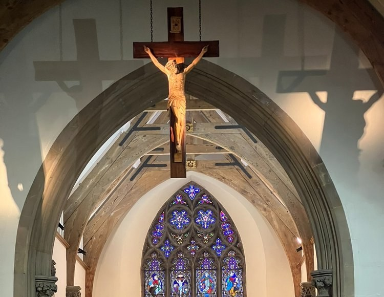
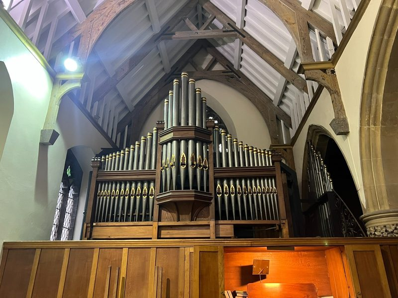
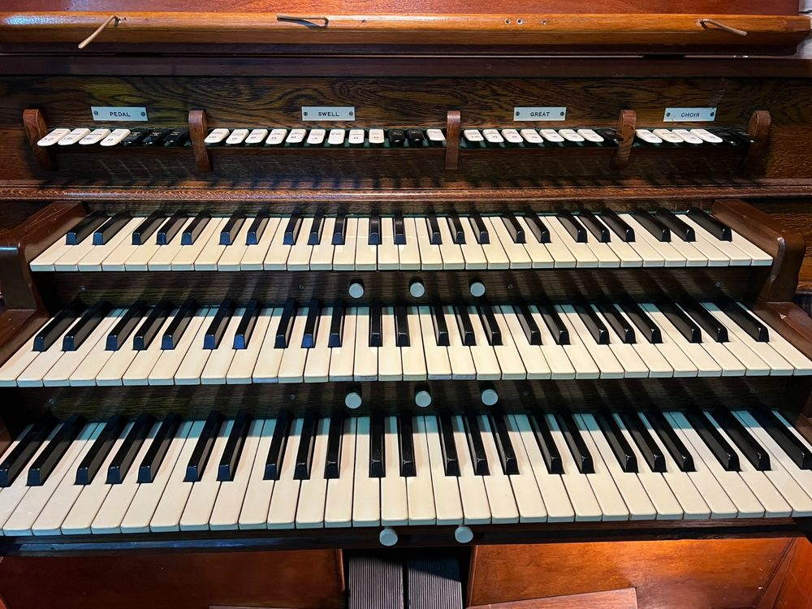
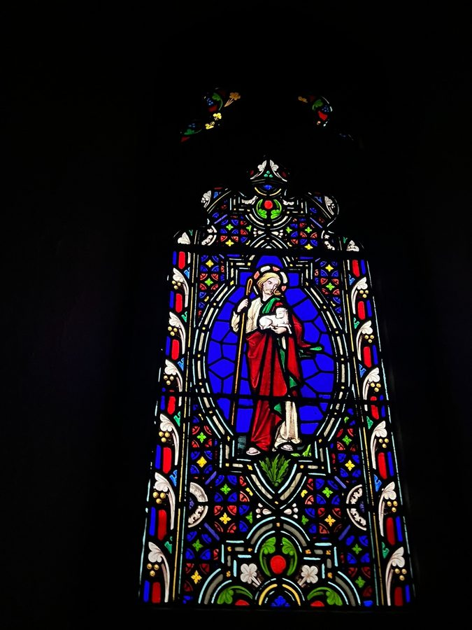
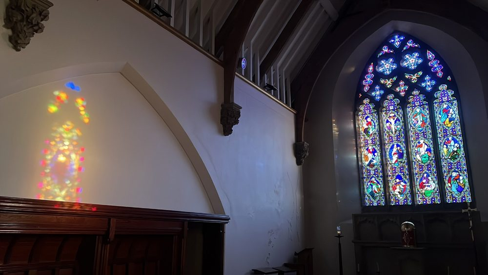
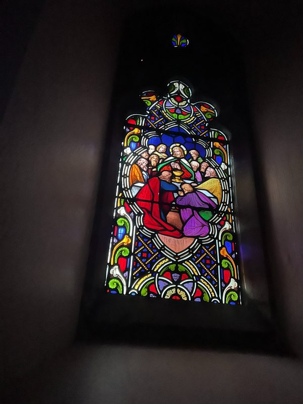
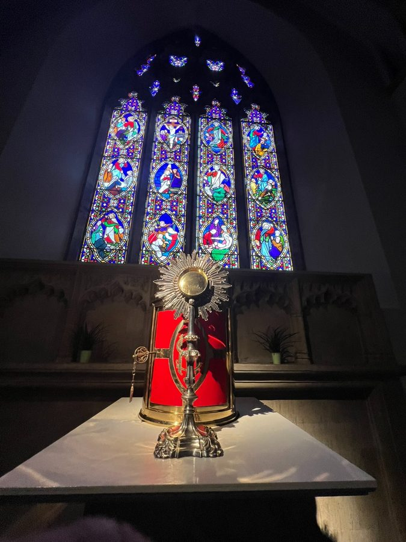
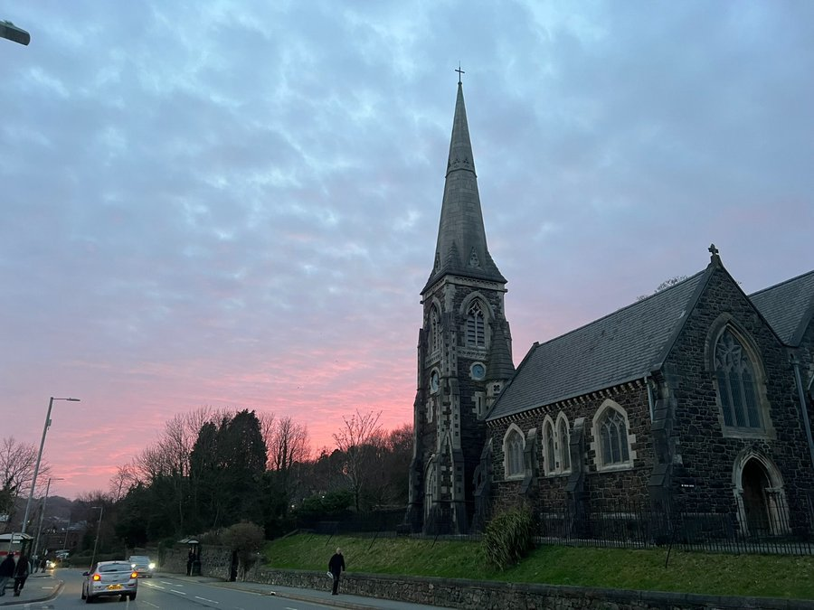
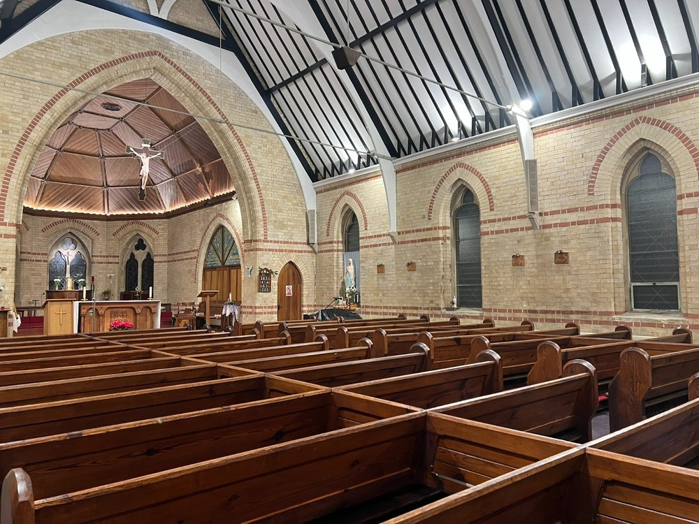

Regular weekly schedule — see bulletin for Easter season variations
Easter season times may vary — please see the bulletin below.
April & May 2026
| Date | Observance | Details |
|---|---|---|
| Saturday 25 Apr | Feast St Mark, Evangelist | Caernarfon 18:00 Vigil Mass |
| Sunday 26 Apr | 4th Sunday of Easter — Vocations Sunday | Bangor: Family Eucharist 10:00; 17:00 Holy Mass. World Day of Prayer for Vocations. |
| Monday 27 Apr | Easter Weekday | Bangor 19:00 Holy Mass |
| Tuesday 28 Apr | Easter Weekday | Bangor 09:45 Morning Prayer; 10:00 Holy Mass |
| Thursday 30 Apr | Easter Weekday | Bangor 12:15 Holy Mass |
| Date | Observance | Details |
|---|---|---|
| Saturday 2 May | Vigil — 5th Sunday of Easter | Caernarfon 18:00 Vigil Mass |
| Sunday 3 May | 5th Sunday of Easter | Bangor 10:00 & 17:00 Holy Mass |
| Saturday 9 May | Vigil — 6th Sunday of Easter | Caernarfon 18:00 Vigil Mass |
| Sunday 10 May | 6th Sunday of Easter | Bangor 10:00 & 17:00 Holy Mass |
| Thursday 14 May | Feast The Ascension of the Lord | Bangor 12:15 Holy Mass — Holy Day of Obligation |
| Saturday 16 May | Vigil — 7th Sunday of Easter | Caernarfon 18:00 Vigil Mass |
| Sunday 17 May | 7th Sunday of Easter — World Communications Day | Bangor 10:00 & 17:00 Holy Mass. Second collection for the Catholic Communications Network. |
| Saturday 23 May | Vigil — Pentecost Sunday | Caernarfon 18:00 Vigil Mass |
| Sunday 24 May | Easter Pentecost Sunday | Bangor 10:00 & 17:00 Holy Mass |
| Saturday 30 May | Vigil — Trinity Sunday | Caernarfon 18:00 Vigil Mass |
| Sunday 31 May | The Most Holy Trinity | Bangor 10:00 Family Liturgy; 17:00 Holy Mass |
Parish life — May 2026
Let us pray that everyone — from large producers to small consumers — be committed to avoiding wasting food, and that everyone has access to quality food.
Congratulations to our ten candidates received into full communion during Holy Week. Following their Baptism and Confirmation, they are deepening their faith through two stages of Mystagogia:
Tier 1: Weekly meetings with sponsors following a guided formation programme.
Tier 2: Fortnightly group sessions led by the RCIA team using the Sycamore programme and digital resources.
17 May is World Communications Day. There will be a second collection at all Masses to support the Catholic Communications Network.
Young people of the parish are invited to join the Altar Servers Ministry. Boys and girls are welcome — full training and guidance will be provided.
To join, please speak to Fr. Savi after Mass or contact the Parish Office.
Supporting those in need through practical action and befriending.
Adam Faries (President): 07886 027689
Anne Breslin (Secretary): 07759 759242
Family Liturgy will take place on Sunday 31 May at 10:00 am. All families are warmly welcome.
First Holy Communion will be celebrated on Saturday 6 June at 10:00 am at Our Lady & St. James, Bangor. Please keep our candidates and their families in your prayers.
Our Safeguarding Representative is Jo Charles.
Tel: 07454 958980
The Diocese of Wrexham is a Registered Charity No. 700426.
Download, print, and return to the parish office or the box at the back of the church
Application form for the Baptism of a child. Includes details for parents, godparents, and marital status. Please contact Fr. Savi to arrange a preparation meeting before submitting.
Download ↓Registration form for children preparing to receive their First Holy Communion. Includes faith formation questions and a parental commitment to attend preparation sessions.
Download ↓Registration form for the rite of Confirmation. Includes faith formation questions, documentation requirements and commitment to attend preparation sessions.
Download ↓For children wishing to serve at the altar, or already serving. Provides contact details for scheduling, training, and parish events. Parental consent required.
Download ↓Registration form for the Rite of Christian Initiation for Adults. For anyone exploring the Catholic faith or wishing to be received into the Church. Sessions are held on Thursday evenings.
Download ↓A step-by-step guide to arranging a Catholic marriage at the parish, covering documentation, marriage preparation, mixed-marriage permissions, and civil requirements. Please contact Fr. Savi at least 6–12 months in advance.
Download ↓When a loved one passes away, the parish is here to support you with care and dignity as you prepare the funeral liturgy. The guide aids in making proper arrangements that reflect your wishes.
Download ↓All forms should be returned to the parish office or placed in the box at the back of the church. For queries, contact the Parish Office: 01248 370421 or speak with Fr. Savi after Mass.
A living tradition of sacred music

The church is fortunate to possess an 1895 three-manual organ by Bishop & Son, used to accompany the choir at Sunday morning services and played at concerts and events throughout the year.
To learn more, visit the National Pipe Organ Register. To arrange a visit, contact our organist Abhay at atporganist@icloud.com.
| Division | Stop |
|---|---|
| Pedal | 32′ Contra Bass |
| 16′ Violone | |
| 16′ Bourdon | |
| 8′ Bass Flute | |
| Choir to Pedal | |
| Great to Pedal | |
| Swell to Pedal | |
| Choir | 8′ Rohr Flute |
| 8′ Dulciana | |
| 8′ Clarinet | |
| 4′ Lieblich Flute | |
| Choir Octave | |
| Swell to Choir | |
| Great | 16′ Contra Gamba |
| 8′ Open Diapason I (display) | |
| 8′ Open Diapason II | |
| 8′ Clarabella | |
| 4′ Principal | |
| 4′ Flauto Traverso | |
| 2′ Flautina | |
| Swell to Great | |
| Swell | 16′ Double Diapason |
| 8′ Violin Diapason | |
| 8′ Lieblich Gedact | |
| 8′ Vox Angelica | |
| 8′ Voix Celeste | |
| 8′ Cornopean | |
| 8′ Oboe | |
| 4′ Geigen Principal | |
| III Mixture | |
| Tremulant | |
| Swell Octave · Swell Suboctave |

The church has a voluntary choir which sings at the 10:00 Sunday Mass each week, as well as enriching the liturgy on days of obligation and major celebrations throughout the liturgical year.
The choir sings hymns, congregational mass settings, and occasional anthems. All are welcome to join.
To find out more, please speak with one of our choir members after the Sunday morning Mass, or contact our organist:
Abhay
atporganist@icloud.com
Our Lady & St. James, Bangor; St. David & St. Helen · Caernarfon






We are here to serve
Fr. Savi Menachery CMI
Parochial Administrator
“Eternal rest grant unto them, O Lord,
and let perpetual light shine upon them.”